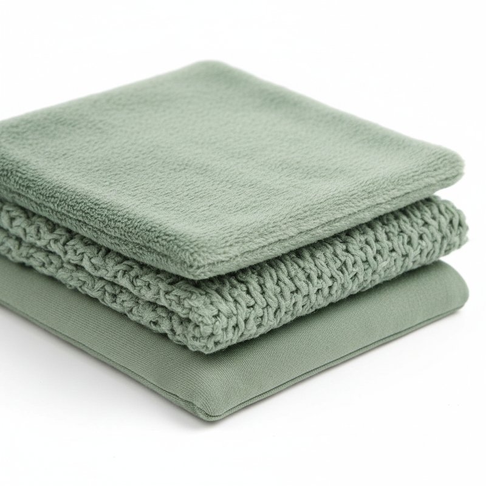
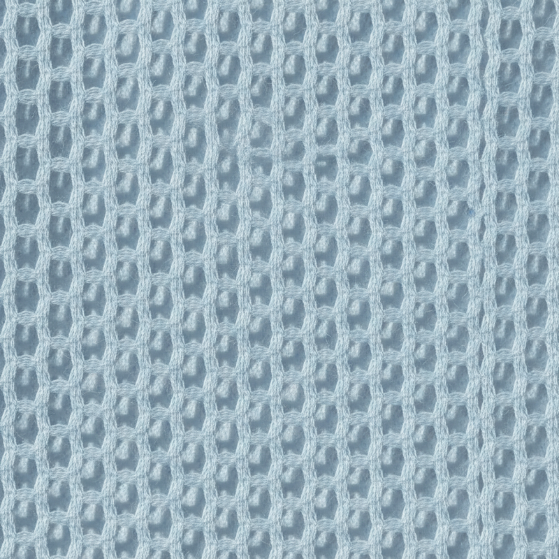

소재 완전
가이드
실키밤부, 트리플밤부, 코튼메쉬 — 우리 아기에 맞는 소재를 찾아보세요.
각 소재의 특성을 비교해보고, 우리 아기에게 맞는 소재를 선택하세요.
실키밤부
실크처럼 부드러운 밤부 레이온. 가볍고 시원해서 여름부터 간절기까지 폭넓게 사용할 수 있는 만능 소재예요.
트리플밤부
밤부 3겹 구조로 보온성과 부드러움을 동시에 잡았어요. 간절기부터 겨울까지 따뜻하게 감싸줘요.
코튼메쉬
메쉬 구조의 면 소재로 최대 통기성을 자랑해요. 한여름에도 시원하게, 땀띠 걱정 없이 사용할 수 있어요.
다섯 가지 핵심 특성을 시각적으로 비교해보세요. 어떤 소재가 우리 아기에게 맞을지 한눈에 보여요.
실크 같은 터치의 비밀
실키밤부는 대나무에서 추출한 밤부 레이온과 면을 블렌딩한 소재예요. 대나무 펄프를 비스코스 공법으로 가공하면 천연 실크에 버금가는 부드러운 촉감이 만들어져요. 아기 피부에 닿았을 때 마찰이 거의 없어서 예민한 피부의 아기도 안심하고 사용할 수 있어요.
대나무 섬유의 가장 큰 장점은 자연 항균성이에요. 별도의 화학 가공 없이도 세균 번식을 억제하는 성분이 섬유 속에 포함되어 있어요. 흡습성도 면보다 약 40% 높아서 아기가 땀을 흘려도 빠르게 흡수하고 뽀송한 상태를 유지해줘요. 가볍고 시원한 느낌이 있으면서도 적절한 보온력을 갖추고 있어서 사계절 활용 범위가 넓어요.
슬리핑백, 바디수트, 스와들 등 썬데이허그 제품 대부분에 적용되는 시그니처 소재예요. 처음 소재를 고르는 분이라면 실키밤부로 시작하면 어떤 계절에도 무난하게 사용할 수 있어요.

3겹 구조의 비밀
트리플밤부는 실키밤부 원단을 3겹으로 직조한 프리미엄 겨울 소재예요. 마치 거즈를 세 장 겹쳐놓은 것처럼 원단 사이사이에 공기층이 형성되어 가벼우면서도 뛰어난 보온력을 제공해요. 단순히 두꺼운 원단을 사용하는 것과는 근본적으로 달라요. 공기층이 체온을 가두면서도 습기는 바깥으로 배출하는 구조예요.
촉감은 실키밤부의 부드러움을 그대로 유지해요. 겹이 늘어나면서 포근한 감촉이 더해지는데, 아기가 감싸안긴 듯한 안정감을 느낄 수 있어요. 보온은 확실하게 하면서도 아기가 답답해하거나 땀을 과도하게 흘리지 않는 균형 잡힌 온도 관리가 트리플밤부의 가장 큰 장점이에요.
실내 온도가 16~20°C 사이인 가을과 겨울에 가장 적합해요. 2.5 TOG 슬리핑백으로 사용하면 추가 이불 없이도 밤새 따뜻하게 잘 수 있어요. 한겨울 난방이 약한 환경이라면 3.5 TOG 제품을 선택하시면 돼요.
메쉬 구조의 시원함
코튼메쉬는 면 97%에 나일론 3%를 더한 에어메쉬 구조의 원단이에요. 원단 표면에 작은 구멍들이 촘촘하게 뚫려 있어서 공기가 자유롭게 순환할 수 있어요. 한여름 30도가 넘는 날씨에도 아기가 답답해하지 않고 쾌적하게 잘 수 있는 비결이 바로 이 통기 구조에 있어요.
여름에 가장 걱정되는 땀띠와 태열 문제를 해결해줘요. 아기는 체온 조절 기능이 미숙해서 어른보다 쉽게 열이 차고 땀을 흘리는데, 코튼메쉬는 땀이 차더라도 빠르게 증발시켜 주기 때문에 피부가 습한 상태로 오래 머물지 않아요. 땀띠가 잦거나 태열이 있는 아기에게 특히 추천하는 소재예요.
맨살에 닿아도 자극이 적을 만큼 부드러운 촉감을 유지하면서, 무게감도 가벼워서 아기가 거부감 없이 받아들여요. 0.3 TOG로 보온력은 낮지만, 그것이 바로 여름 소재의 핵심이에요. 24°C 이상의 실내에서 사용하기에 최적이에요.

각 계절에 맞는 소재와 TOG 조합을 추천해드릴게요. 실내 온도를 기준으로 선택하면 더 정확해요.
실키밤부 슬리핑백
TOG 1.0
+ 반팔 내의
코튼메쉬 슬리핑백
TOG 0.3
+ 민소매 내의
실키밤부 / 트리플밤부
TOG 1.0~2.5
+ 긴팔 내의
트리플밤부 슬리핑백
TOG 2.5~3.5
+ 수면조끼
좋은 소재도 관리가 잘못되면 금방 상해요. 소재별 세탁 포인트를 알아두세요.
실키밤부
세탁망 사용 필수. 30°C 이하 중성세제로 세탁하세요. 그늘에서 자연 건조가 가장 좋아요. 섬유유연제는 코팅막을 만들어 흡습성을 떨어뜨리니 사용하지 마세요.
트리플밤부
세탁망 사용 필수. 30°C 이하로 세탁하세요. 3겹 구조라 약간 두꺼우니 완전 건조를 꼭 확인하세요. 건조기는 저온(Delicate) 설정으로 사용 가능해요.
코튼메쉬
세탁망 권장. 40°C 이하 세탁 가능해요. 메쉬 구조 덕분에 빠르게 건조되고 구김도 적어요. 세 소재 중 관리가 가장 편한 소재예요.
모든 밤부 소재는 세탁할수록 부드러워져요. 처음에는 약간 뻣뻣하게 느껴질 수 있지만, 3~4회 세탁 후 최상의 터치감이 나와요. 새 제품은 착용 전 한 번 세탁해주시면 잔여 풀기가 제거되면서 소재 본연의 부드러움이 살아나요.
원하는 소재의 제품을 바로 확인해보세요.